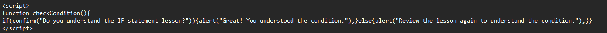

they perform different actions for different decisions
IF STATEMENT !
It is used to check or verify a condition and execute a set of statements only if the condition is true. This should be referred to as a statement and not as a function.
NESTED IF STATEMENT !
"If statement" with another "If statement"
IF-ELSE STATEMENT !
It has the same format as the "if statement,” the only thing is that an Else part is added to an If statement. So, if the condition satisfies the statement inside an If statement, part of the code will be executed. And the Else statement inside the Else part only will be executed.
IF ELSE IF STATEMENT !
We don’t always evaluate just one condition. Sometimes more than one or multiple conditions must be evaluated. This is possible with the If-Else-If statement.
SWITCH STATEMENT !
In the previous example, we used the If Else If statement to test multiple conditions. What if there are a lot of options? The If Else If statement can be tedious. To address this issue, JS offers an easier way to implement multiple conditions, that is through the Switch statement.
Try clicking the image!